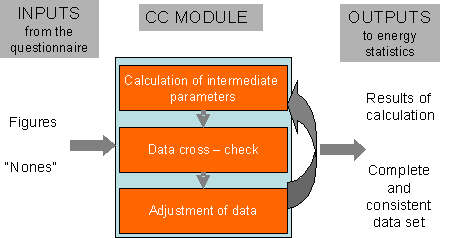
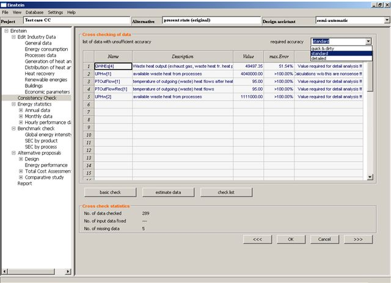
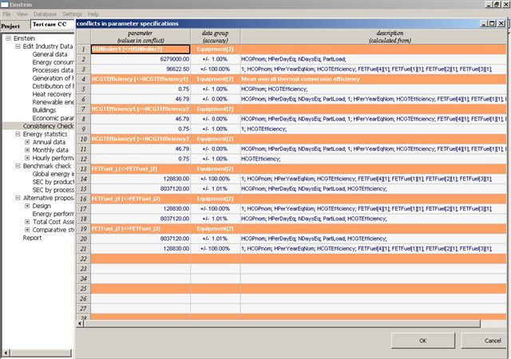

| <<< |
UP |
>>> |
A systematic analysis of the so called “status-quo” (present state (original)) is the starting point for the further identification of energy saving opportunities for a company. However, in most of the cases, this requires the acquisition of a rather large number of data. Besides the quantity, also the accuracy and the consistency of the available data affect significantly the reliability of the alternative solutions envisaged.
In the case of
redundancy, conflicts are automatically detected and a list of error messages
is produced.
In case of lack
of information (and no conflict) the
EINSTEIN software tool is able to calculate and to complete automatically the
questionnaire with the missing data.
a) whether the
data gathered are consistent, or whether there are contradictions in the
information You got (e.g. incorrect units of measurements)
b) whether
relevant data are missing (and which data), so that You can ask explicitly for
or estimate those figures.
And now, let’s start.
In order to get familiar with the data input and the consistency-check concept, if You are a first-time user, it is recommended to perform first the example 4.2 (Go to the menu “Edit industry data”-> Projects in the database and open the project “Einstein Guide 4.2 Basecase” and followings) according the description given into the Audit Guide, chapter 4.2.
In general, when
entering data, it is recommended to enter the process’ data first - and to
check the consistency-, then the equipments’ (but without any constraint such as
e.g. the load factor) - and to check the consistency-, then the pipes’ - and to
check the consistency- and last, the overall energy consumption and to check
the consistency of the complete data set.
Anyhow, take in
mind that in order to perform the consistency check, equipments and pipes have
to be previously created and linked each other and to the processes – but it
can be done in the intermediates steps without adding any specific parameter
such as the power etc.
It is also recommended to analyse (i.e. to enter and check) sub-system by sub-system (e.g. enter FIRST data of equipment 1 and the related pipes and related processes THEN check the consistency and enter the second set of data: equipment 2 -> related pipes -> related processes…).
In the first quadrant (top)
“Cross checking of data”:
· Code Name of the parameter.
Any parameter (such as FET, USH,UPH etc..) appear with a number into
brackets. E.g. USH[1] etc.
In fact, to any “class of objects” used in EINSTEIN for modelling an
energy system it is associated an index identifying a specific object within a
class:
·
i to fuels
·
j to equipments
·
m to pipes
·
k to processes.
Moreover [0] stays for the total. E.g USH[0] is equal to the sum of
the USH of any equipment “i” listed into the project equipment list:
USH[0] = Σ USH (i)
E.g. if the number of equipments is 3 then:
USH[0] = USH[1] + USH[2] + USH[3]
It is clear now that any index different from 0 refers to equipment,
fuel, process etc. number 1,2,3. E.g. UPH[1] represents the useful process heat
of process 1 (as shown into the process list entered by the user) while e.g.
FEC [2] is the final energy consumption of the fuel number 2, and so on.
· Description of the parameter as reported into the related field of the questionnaire
·
(Numeric) Value of the parameter as
calculated by the internal consistency check algorithm
· Max (relative) error associated to the numeric value expressing the figure accuracy. E.g if the parameter Value = 100 and Max error = ±70% this means that, under the given assumptions and known data, acceptable values for the parameter range between 30 and 170
· Action to be taken according the degree of analysis’ accuracy chosen.
·
The number of data checked by the system
·
The number of input data fixed after estimation (not currently in
operation)
·
The number of missing data estimated automatically by the algorithm.

Moreover, a windows named “Conflicts in parameter specifications” pops up anytime that there is a conflict among different values associated to one parameter. In this case the name and the values of the parameter are shown on the left-hand side, the level of accuracy in the central column while the background parameters into the right-hand side. The “background parameters” are those parameters that have been internally taken into consideration by the algorithm for the calculation. Based on energy balances, it is known that a variable can be calculated according different mathematical paths: if executing these different calculation paths the algorithm detects a conflict (i.e. two different results are obtained for the same parameter, e.g. for the final energy consumption of an equipment) then both figures will be shown into the conflicts list under the same parameter name together with the background parameters used for the calculations (e.g. in one case the power and the number of operating hours, and in the other, the fuel consumption and the conversion efficiency).
· Parameters (values in conflict). Within this column, for each parameter the user can find 2 types of information (and 3 data). On one hand, in the orange row it is reported the code name of the parameter affected by the conflict. In picture 5.3, the first row shows the following text (top-right): USHBoiler1[<>USHBoiler2]. It means that the parameter USHBoiler calculated according the equation 1 differs from the USHBoiler calculated according the equation 2. The index 1 and 2 refer to two different calculating ways (energy balances) run in the background by the consistency check module. For which boiler the conflict arises it is shown in the column data group (accuracy) where in the first orange row it is reported the type (Equipment) and the number of the unit ([2]). On the hand, the 2 rows under the orange one show two figures: they are the values of the parameter calculated respectively according the procedure 1 and 2.
· Data group (accuracy). As already explained above, for each conflict this column gives 2 types of information (and 3 data): the reference unit (e.g. Equipment [2]) and the accuracies of the 2 values calculated respectively according the procedure 1 and 2.
· Description (calculated from). This column shows the background parameters used to calculate the values in conflicts (e.g. USHBoiler1 and USHBoiler2). Two list of parameters are given here e.g.:
1) HCGPnom, HPerDayEq…They mean that USHBoiler1 = HCGPnom x HPerDayEq x ….
2) …, HCGTEfficiency, FETFuel [4] [1], … They mean that USHBoiler2 =
… HCGTEfficiency x FETFuel [4] [1]…
The 2 indexes refer respectively to equipment number ([4]) and to fuel
number ([1] e.g. natural gas).
Concerning the “conflict messages”, besides the most important quantities such as FET/UPH/USH/QHX/QWH, described into the AUDIT GUIDE in chapter 2 and in the glossary, the following abbreviations/indexes/acronyms are used to compose the code name of a parameter:
·
Proc for process related items
·
Eq for equipment related items
·
Pipe for pipe and duct related items
·
Temp for temperature related items
·
PT for process temperature
·
M for mass related items
·
Vol or V for volume related items
·
H per hours
·
Env for environment
·
Flow for (e.g.mass, medium..) flow
related items
·
In/out for in/out (e.g. flows)
·
N for number (e.g. NDaysEq=Number of
operating Days of an Equipment)
·
Nom for nominal (e.g power)
· HCG for heat and cold generation related
items (e.g. HCGPnom=heat or cold generation Nominal Power; HCGTEfficiency=
Thermal Efficiency for Heat or Cold Generation)
·
Consum for consumption
·
Electr for electricity related items
·
Fact for factor
·
Loss for losses related items.
The overall set of code names with the description and the translation into the project languages is also available as MS excel file.

The EINSTEIN
methodology distinguishes between three levels of analysis with increasing
level of detail and accuracy that are also taken into consideration for the
consistency check (required accuracy option
as previously described):
✗ Level 1: Quick&Dirty analysis.
For quick&dirty analysis it is enough
to know with a certain minimum accuracy (as minimum accuracy EINSTEIN considers
an error margin of less than +/- 50 %) the energy consumption and the main
temperature levels (process temperature) of the most energy consuming processes
in the company (and also FEC/FET(0), USH(0) and (UPH (0) i.e. the totals)
✗ Level 2: Standard analysis.
For the EINSTEIN
standard level of analysis at least the following parameters should be known
with the minimum level of accuracy:
- energy
consumption of the main energy consuming processes and it's decomposition in
heat&cold demand for circulation, maintenance and start-up
- all
temperature levels (inlet, process, outlet) and hours of operation of those
processes and the corresponding
heat & cold supply equipment
- waste heat
streams from the main energy consuming processes
✗ Level 3: Detailed analysis.
For a detailed
level of analysis at least the full set of information as given by the EINSTEIN
basic questionnaire
should be available with the required accuracy.
First, fill in
data into the electronic questionnaire then select the consistency check option
from the main function tree (right-hand side).
Chose the level of
required accuracy and click on the basic check button.
If the conflict window
pops up click on the OK button (bottom – left) and go back to the questionnaire
to modify or enter new data according the conflict messages.
Until when the
conflict is not solved it is not possible to go further and to accede to the energy
statistic module and to configure alternatives.
If no conflict
is detected, or after it is solved, user
can either accept the results of the consistency check by clicking on the Ok button
and go ahead, or he/she can go back to the questionnaire, enter manually the
missing data and/or ask to EINSTEIN to estimate some parameters. In this case,
before clicking on the button “estimate data”,
it is necessary to pass again the consistency check.
In order to change
the data entered into the questionnaire, it is necessary first to go to the
main menu bar: click on the command “view” and select “present state
(original)”. Any time this operation is done the consistency check has to be
passed again.
If the “present
state (checked)” is selected after the consistency check, the user can accede
the questionnaire to check the figures
automatically calculated by the algorithm instead of “Nones” or blank
fields.